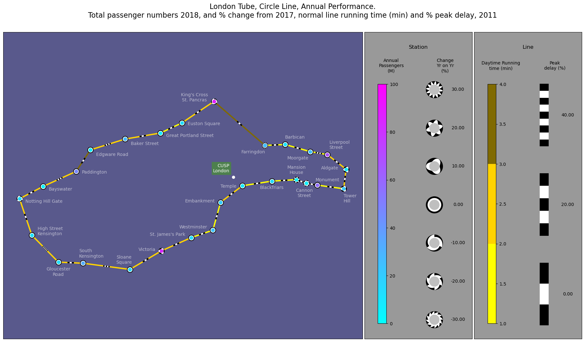

Glyphs and edges of the London Underground#
Station passenger volume change 2017 - 2018 Line segment running time and percentage change (slow down) at peak times 2011 data.
Powered by TfL Open Data Contains OS data © Crown copyright and database rights 2016’ and Geomni UK Map data © and database rights [2019]
Nick Holliman, @binocularity, September 2023
[ ]:
import pandas as pd
import matplotlib.pyplot as plt
from matplotlib.colors import ListedColormap
import numpy as np
from PIL import ImageColor
from vizent import create_plot, add_glyphs, add_lines
# Flag to draw station name labels on the plot.
drawStationLabels = True
# Circle line RGB colour from the TfL hexcode.
# Calculate a derived three colour scale for the line speed.
rgbColraw = (ImageColor.getcolor("#FFD300", "RGB"))
rgbCol = tuple(ti/255 for ti in rgbColraw)
centralLineCol = tuple(ti/255 for ti in rgbColraw)
cmapPlain = ListedColormap([ tuple(np.clip(ti*2,0.0,1.0) for ti in centralLineCol),
centralLineCol,
tuple(ti/2 for ti in centralLineCol) ])
# Read in csv table holding the node locations and data
# Use the UK national grid Eastings and Northings location data.
dfNodes = pd.read_csv ('sample-data/circle-line-tubeNodesZ1L3PsgrCnghPcnt1718GB.csv')
N_Vals = dfNodes["northing"]
E_Vals = dfNodes["easting"]
pcntVals = dfNodes["AnnEntExPcnt2017"]
pcntChng1718Vals = dfNodes["AnnEntExChngPcnt1718"]
passngrNum2018 = dfNodes["AnnEntEx2018"]
passngrNum2018_M = dfNodes["AnnEntEx2018"]/1000000
# Load the edge connectivity table with the edge data on journey times.
dfEdges = pd.read_csv ('sample-data/circle-line-edgesZ1L3_withTime.csv')
startPts = []
endPts = []
for i, edge in dfEdges.iterrows() :
startPts.append([E_Vals[edge["s1"]-1], N_Vals[edge["s1"]-1] ])
endPts.append([E_Vals[edge["s2"]-1], N_Vals[edge["s2"]-1] ])
# Create a Vizent plot
vizent_fig = create_plot(use_glyphs=True,
use_lines=True,
show_legend=True,
show_axes=True,
use_cartopy=False,
scale_x=20,
scale_y=11.25)
# Add glyphs to the plot (graph nodes)
add_glyphs( ax=vizent_fig,
x_values=E_Vals,
y_values=N_Vals,
colormap = "cool",
color_values=passngrNum2018_M,
color_min = 0.0,
color_max = 100.0,
shape_values=pcntChng1718Vals,
shape_min = -30,
shape_max = 30.0,
shape_neg = "saw",
shape_n = 4,
size_values=[14 for i in range(27)],
legend_title = "Station",
color_label = "Annual\nPassengers\n(M)",
shape_label = "Change\nYr on Yr\n(%)",
label_fontsize=10
)
# Add edges to the plot.
add_lines(
ax = vizent_fig,
x_starts=[i[0] for i in startPts],
y_starts=[i[1] for i in startPts],
x_ends=[i[0] for i in endPts],
y_ends=[i[1] for i in endPts],
freq_values=dfEdges["slowerPcnt"],
width_values=[3 for i in range(27)],
freq_min = 0.0,
freq_max = 40.0,
freq_n = 3,
color_values=dfEdges["Inter peak (1000 - 1600) Running time (mins)"],
colormap=cmapPlain,
color_min=1.0,
color_max=4.0,
style = "set_length",
length_type = 'pixels',
striped_length =20,
# length_type = 'units',
# striped_length =200,
legend_title = "Line",
color_label = "Daytime Running\ntime (min)",
frequency_label = "Peak\ndelay (%)",
label_fontsize=10
)
# Select correct subfigure to overplot with station names
fig = vizent_fig[0]
ax = vizent_fig[1]
# CUSP London location (at Bush House)
ECUSP = 530736
NCUSP = 181042
ax.plot(ECUSP, NCUSP, 'o',markerfacecolor="w",markeredgecolor="w")
ax.text(ECUSP-100.00, NCUSP+125.00, 'CUSP\nLondon', color='w', fontsize = 10,
horizontalalignment='right',
bbox={'facecolor': (0.3,0.5,0.3),'edgecolor':(0.3,0.5,0.3), 'pad': 3})
#Draw the station names if flag for text is True
if drawStationLabels :
dfNames = pd.read_csv ('sample-data/circle-line-tubeNodesZ1L3NamesLocsGB.csv')
for i,row in dfNames.iterrows() :
lonNm = row["easting"] + row["adjEast"]
latNm = row["northing"] + row["adjNorth"]
curName = row["name"]
curName = curName.replace(r'\n', '\n')
ax.text(lonNm, latNm, curName, color='w', fontsize = 10, alpha=0.6,
horizontalalignment=row["ha"])
# Adjust the plot aesthetics.
fig.axes[2].set_facecolor((0.35,0.35,0.55))
fig.axes[1].set_facecolor('0.6')
fig.axes[0].set_facecolor('0.6')
plt.suptitle("London Tube, Circle Line, Annual Performance.\n"+
"Total passenger numbers 2018, and % change from 2017,"+" normal line running time (min) and % peak delay, 2011",
fontsize=16)
# When saving this image, a DPI of 192 generates a file of 3,840 x 2,160 pixels (i.e. UHD quality).
# This can be done with the following lines:
# fileDPI = 192
# plt.savefig( fileName, dpi=fileDPI )
C:\Users\k2364528\Code\vizent\vizent\scales.py:230: UserWarning: Specified minimum and maximum shape scale values or specified shape scale spread exclude some data
warnings.warn("Specified minimum and maximum shape scale values "
Text(0.5, 0.98, 'London Tube, Circle Line, Annual Performance.\nTotal passenger numbers 2018, and % change from 2017, normal line running time (min) and % peak delay, 2011')

{kind=link}